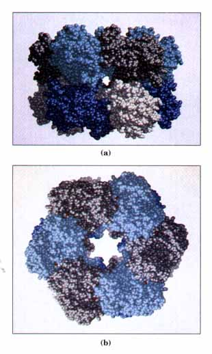
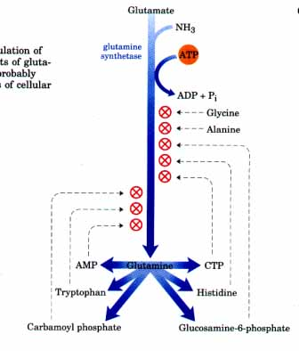
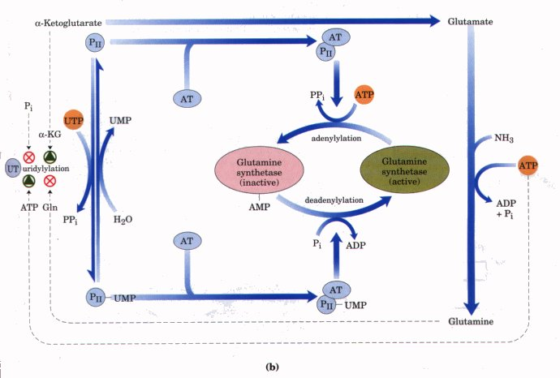
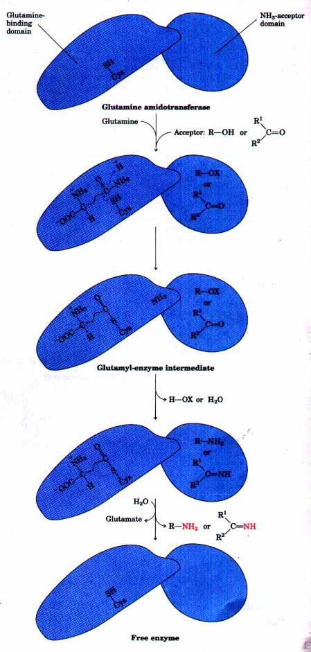

glutamine + ADP + Pi
+ H+
glutamine + ADP + Pi
+ H+Reduced nitrogen in the form of NH4+ can be assimilated, first into amino acids and then into other nitrogen-containing biomolecules. Two amino acids, glutamate and glutamine, provide the critical entry point. Recall that these same two amino acids play central roles in amino acid catabolism (Chapter 17). The amino groups of most other amino acids are derived from glutamate via transamination reactions (the reverse of the reaction shown in Fig. 17-5a). The amide nitrogen of glutamine is the source of amino groups in a wide range of biosynthetic processes. In most types of cells (and intercellular fluids in higher organisms), one or both of these amino acids is present at elevated concentrations, sometimes of an order of magnitude or more higher than those of other amino acids. In E. coli so much glutamate is required that it is one of the primary solutes in the cell. Its concentration is regulated and varied, not only in response to nitrogen requirements, but also to keep the interior of the cell in osmotic balance with the external medium.
The biosynthetic pathways to glutamate and glutamine are simple and appear to be similar in all forms of life. The most important pathway for the assimilation of NH4+ into glutamate requires two reactions. First, glutamate and NH4 react to yield glutamine by the action of glutamine synthetase, which has a high affinity for NH4+ and is found in all organisms:
Glutamate + NH4+ + ATP glutamine + ADP + Pi
+ H+
Recall that this reaction takes place in two steps, with enzyme-bound γ-glutamyl phosphate as an intermediate (p. 515):
(1) Glutamate + ATP  γ-glutamyl phosphate + ADP γ-glutamyl phosphate + ADP |
| (2) γ-Glutamyl phosphate + NH4+ glutamine + Pi + H+ |
| Sum: Glutamate + NH4+ + ATP glutamine + ADP + Pi + H+ |
In addition to its importance for NH4+ assimilation in bacteria, this is a central reaction in amino acid metabolism in mammals; it is the main pathway for converting toxic free ammonia into the nontoxic glutamine for transport in the blood (Chapter 17).
In bacteria, glutamate is then produced by the action of the enzyme glutamate synthase. This enzyme catalyzes the reductive amination of a-ketoglutarate, an intermediate of the citric acid cycle, using glutamine as nitrogen donor.
α-Ketoglutarate + glutamine + NADPH + H+
glutamate + NADP+
The net reaction of these two enzymes (glutamate synthase and glutamine synthetase) in bacteria is
α-Ketoglutarate + NH4+ + NADPH + ATP
L-glutamate + NADP+ + ADP + Pi
Thus there is a net synthesis of one molecule of glutamate.
In animals, glutamate synthase is not known to occur; glutamate is maintained at high levels by processes such as the transamination of α-ketoglutarate during amino acid catabolism (Chapter 17).
Glutamate can also be formed from α-ketoglutarate and NH4+ by the action of L-glutamate dehydrogenase, present in all organisms.
The required reducing power is furnished by NADPH:
α-Ketoglutarate + NH4+ + NADPH L-glutamate +
NADP+ + H2O
We encountered this reaction in the catabolism of amino acids (Chapter 17). In eukaryotic cells, L-glutamate dehydrogenase is located in the mitochondrial matrix. The equilibrium for the reaction favors reactants, and the Km for NH4+ (~1 mM) is so high that this reaction probably makes only a modest contribution to NH4+ assimilation. (Recall that the glutamate dehydrogenase reaction, in reverse, is a primary source of NH4+ destined for the urea cycle.) Soil bacteria and plants rarely encounter sufficiently high NH4+ concentrations for this reaction to make a significant contribution to glutamate levels, and generally rely on the two-enzyme pathway outlined above.
Glutamine synthetase in bacteria is one of the most complex regulatory enzymes known-not surprising in light of its central role as the entry point for reduced nitrogen in metabolism. It is subject to both allosteric regulation and control by covalent modification. The enzyme has 12 identical subunits (Fig. 21-4). At least six end products of glutamine metabolism plus alanine and glycine are allosteric inhibitors of the enzyme (Fig. 21-5), and each subunit (Mr 50,000) has binding sites for all eight inhibitors as well as an active site for catalysis. Each inhibitor alone gives only partial inhibition. The effects of the different inhibitors, however, are more than additive, and all eight together virtually shut down the enzyme. This control mechanism provides a minute-by-minute adjustment of the supply of glutamine to the metabolic processes that require it. Superimposed on the allosteric regulation is inhibition by adenylylation of (addition of AMP to) Tyr397 (Fig. 21-6a), which is located near the enzyme's active site. This covalent modification increases the enzyme's sensitivity to the allosteric inhibitors, and the enzyme's activity decreases as more of the 12 subunits are adenylylated. Both adenylylation and deadenylylation are promoted by the enzyme adenylyl transferase, part of a complex enzymatic cascade that responds to levels of glutamine, α-ketoglutarate, ATP, and Pi (Fig. 21-6b). The activity of adenylyl transferase is modulated by binding to a regulatory protein called PII. The effect of PII, in turn, is regulated by covalent modification (uridylylation), again at a Tyr residue. The adenylyl transferase complex with PII-UMP stimulates deadenylylation, whereas the same complex with deuridylylated PII stimulates adenylylation of glutamine synthetase. The uridylylation and deuridylylation of PII is brought about by a single enzyme, uridylyl transferase, with both uridylylation and deuridylylation activities. Uridylylation is stimulated by α-ketoglutarate and ATP but inhibited by glutamine and Pi. The deuridylylation activity is not regulated. The net result of this complex mechanism is a decrease in glutamine synthetase activity when glutamine levels are high and an increase in activity when glutamine levels are low and the α-ketoglutarate and ATP substrates are available. |
 Figure 21-4 Subunit structure of glutamine synthetase as determined by x-ray diffraction. (a) Side view. The subunits are identical; they are differently colored to illustrate packing and placement. (b) Top view. The red atoms visible in each subunit are manganese ions bound in the enzyme's active sites.  Figure 21-5 Cumulative allosteric regulation of glutamine synthetase by six end products of glutamine metabolism. Alanine and glycine probably serve as indicators of the general status of cellular amino acid metabolism. |

Figure 21-6 Second level of regulation of glutamine synthetase: covalent modifications. (a) Structure of an adenylylated Tyr residue. (b) Cascade leading to adenylylation (inactivation) of glutamine synthetase. AT represents adenylyl transferase; UT, uridylyl transferase. The details of this cascade are discussed in the text.
 |
Figure 21-7 Proposed mechanism for glutamine amidotransferases. Each enzyme has two domains. The glutamine-binding domain has a number of structural elements conserved among many of these enzymes, including a Cys residue required for activity. The NH3-acceptor (second substrate) domain varies. The γ-amido nitrogen of glutamine (red) is released in the form of NH3 in a reaction that probably involves formation of a covalent glutamylenzyme intermediate. Two types of amino acceptors are shown. X represents an activating group, typically a phosphate derived from ATP, that facilitates displacement of a hydroxyl group from R-OH by NH3. |
The pathways described in this chapter offer examples of a variety of interesting chemical rearrangements. Several of these recur and deserve special note before we discuss the pathways themselves. These are (1) the transamination reactions and other rearrangements promoted by enzymes containing pyridoxal phosphate, (2) the transfer of one-carbon groups using either tetrahydrofolate or S-adenosylmethionine as a cofactor, and (3) the transfer of amino groups derived from the amide nitrogen of glutamine.
Pyridoxal phosphate (PLP), tetrahydrofolate (H4 folate), and S-adenosylmethionine (adoMet) were described in some detail in Chapter 17; reactions promoted by these enzymatic cofactors were described in Figures 17-7, 17-19, and 17-20, respectively. Here we will focus on amido group transfer from glutamine.
There are over a dozen known biosynthetic reactions in which glutamine is the major physiological source of ammonia, and most of these appear in the pathways outlined in this chapter. As a class, the enzymes catalyzing these reactions are called glutamine amidotransferases, and all have two structural domains. One domain binds glutamine and the other binds the second substrate, which serves as amino group acceptor (Fig. 21-7, opposite). In the reaction, a conserved Cys residue in the glutamine-binding domain is believed to act as a nucleophile, cleaving the amide bond of glutamine and forming a covalent glutamyl-enzyme intermediate. The NH3 produced in this reaction remains at the active site and reacts with the second substrate to form the aminated product. The covalent intermediate is hydrolyzed to form the free enzyme and glutamate. If the second substrate must be activated, ATP is generally used to generate an acyl phosphate intermediate (represented as R-OX in Fig. 21-7). The enzyme glutaminase is similar but has no second substrate, and this reaction simply yields NH4+ and glutamate (p. 515).